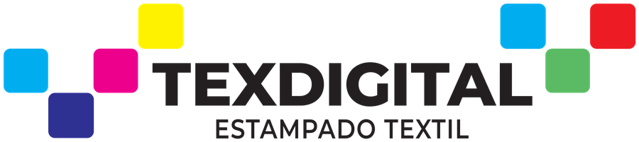

Sistema de Gestión
Rollos de tela — stock disponible.
No hay rollos de tela guardados todavía.
Todavía no se registró ningún ajuste.
Este rollo no se seleccionará para su uso en trabajos de su textil.